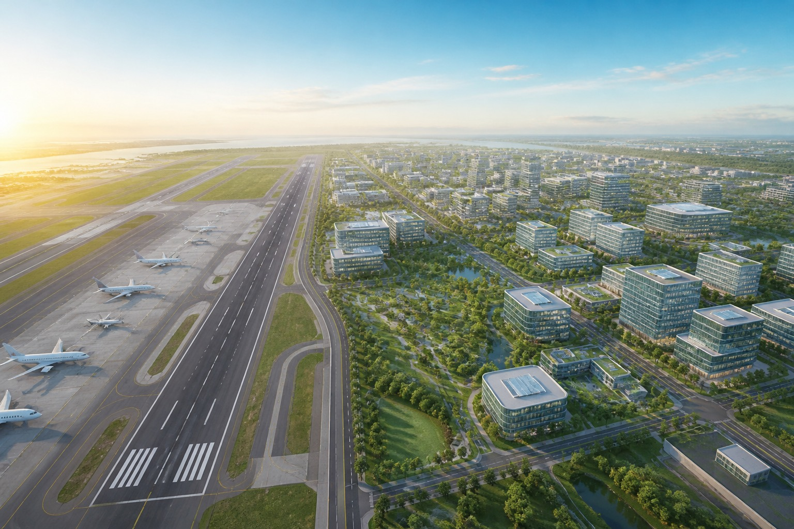

2026年10月8日，台北市府宣布規劃松山機場遷移、原址300公頃打造AI產業聚落、住宅與公園。本頁刻意不以藍綠白陣營或特定政治人物的立場切入，而是把這個議題當成一道長期的城市戰略與公共治理問題來拆解：環保、交通、住宅、軍事、獲利、戰略六大面向逐一檢視，並回顧三十年來這個議題在不同執政團隊手中反覆出現又反覆落空的歷史模式，作為判斷這次提案成熟度的參照基準。
蔣萬安提出的構想涵蓋「松山機場及周邊約300公頃」，初步分配為：

| 用途 | 提案面積 | 備註 |
|---|---|---|
| AI產業聚落 | 100公頃 | 市府稱將銜接內科、南港的科技產業聚落 |
| 住宅及支援性公共設施 | 90公頃 | 搭配限高解除後的都市更新 |
| 公園綠地 | 110公頃 | 市府論述中的環保與生活品質賣點 |
市府並搭配跨河道路、捷運路網規劃，以桃園機場第三航廈（預計2027年啟用）、第三跑道（預計2033年啟用）作為承接松機運量的時程依據。這是市府提出的規劃與時程，並不等於中央已核定遷移。［1］
「桃機有新航廈、新跑道」回答的是旅客能不能下機、飛機能不能降落；但「松山機場能不能搬」還涉及軍方專機、空勤救災任務、國內線航班、既有限高管制與周邊土地權屬——這些都不是桃機擴建工程單獨能解決的問題。
松山機場「該不該搬」在台北市選戰與中央政策辯論中，至少已經循環了三十年。以下時間軸依公開新聞報導整理：
日治時期即設有機場雛形；1947年首航台北—台南航線，1949年政府遷台後成為重要門戶機場。［5］
桃園國際機場（中正機場）啟用，松山機場國際航線轉移，自此專營國內線。［5］
陳水扁就任台北市長即主張「遷建松山機場」，由副市長陳師孟邀集相關單位商討替代地點，包括林口台地（濃霧問題）、關渡大度路、三芝等地（地形與聯外交通障礙），最終未能推進。［5、9］
因應台北101動工，民航局曾考慮調整松機飛航路線以降低對高樓飛安的影響，顯示松機與市中心發展長期存在空間衝突。［5］
民進黨李應元代表參選台北市長，提出廢除松山機場政見——最終落選。［7、11］
兩岸直航開放，松山機場重新恢復國際機場功能；松山—上海虹橋、松山—東京羽田等航線相繼開通，松機營運角色不減反增，客觀上提高了日後遷移的難度與代價。［5］
復興航空GE235班機自松山機場起飛後墜毀，再度引發松機存廢的社會討論；同年交通部過往評估也指出，遷移時機「有但書」——須等桃園機場擴建到位。［2、9］
柯文哲多次表示，松機遷建「已經是各政黨與許多專家學者的共識」，剩下的只是時程問題——但任內同樣未能提出具體搬遷與時程方案。［12］
民進黨姚文智參選台北市長，主張廢除松機、改建為中央公園，並以激烈言詞表態若未能實現願「在跑道上搭帳篷讓飛機輾過」——最終落選。［7、11］
參選立委的吳怡農提出等桃園機場第三跑道完工後遷移松機、原址改建公園的主張——同樣未能在選舉中勝出；值得一提的是，蔣萬安當時曾批評此類主張「沒有常識」，與他2026年自己提出遷機案形成對照。［7、11］
時任立委蔣萬安曾拜訪剛卸任交通部長的葉匡時，討論松山機場遷移的可能性；葉匡時表示長遠看法上贊同遷移，但前提是桃園機場第三航廈與第三跑道完工營運後。［8］
台北市長蔣萬安正式宣布規劃松山機場遷移，300公頃原址打造AI產業聚落、住宅與公園，目標時程銜接桃機2027年第三航廈、2033年第三跑道。葉匡時隨即表態支持，但同日也有學者提出貿然遷移恐重創首都經濟動能的擔憂。［1、6、8］
至少李應元（2002）、姚文智（2018）、吳怡農（2020，立委選舉）、黃珊珊（2022市長選舉亦曾提及相關構想）四人都曾在選戰中喊出松機遷移或存廢議題，但都未能勝選——這是媒體稱松機遷移為「選票炸彈」的原因：議題聲量高、但政治兌現率低。［7］這個歷史模式，也是本頁後面評估「政治可行性」時最重要的參照基準。
110公頃綠地是最大賣點，但解除限高與原址開發仍須完整環境影響評估，替代選址方案多涉及填海造地，環境成本更高。
桃機有新航廈不代表吃得下所有航班，離島旅客與市中心商務旅客的完整旅程時間可能不減反增。
90公頃住宅看得到，但限高解除後誰買得起、公共效益由誰享有，仍是懸而未答的問題。
軍方專機、空勤救災任務目前共用松機跑道，公開資訊中沒有確定的替代安置方案。
「12兆產值」未說明計算期間與方法，也未扣除本就會發生的投資與搬遷代價，不能直接視為淨效益。
AI企業的擴張需求是現在，但園區主要效益很可能落在2030年代中後期——時間軸對不上產業競爭節奏。
市府論述中最容易打動人心的部分，就是「110公頃公園綠地」與「解除周邊限高、噪音管制區」。松山機場長年因飛航安全理由，限制周邊建築高度，並劃定噪音影響範圍，附近居民確實承受了數十年的航空噪音與都市天際線限制。
機場遷移後，周邊噪音公告區可望解除，釋出的土地若確實轉為公園綠地，對提升都市降溫、增加人均綠地面積有實質幫助；解除限高也可能改變內湖、松山一帶的都市天際線與通風條件。但這些效益的前提是「機場真的搬走」，而不是「土地重劃完成前就先享有」。
原址全面開發涉及環境影響評估程序，必須重新檢視土壤、地下水、周邊生態廊道與防洪排水系統，這在過往評估中就被列為遷移配套的一環，不是市府單方面宣布規劃時程就能跳過。
歷史上曾被提及的替代機場選址——淡海、三芝外海新機場，或基隆、桃園外海填海造地——環境成本遠高於「整併到既有桃園機場」。填海本身涉及海洋生態、潮流與空域重疊問題，過往評估並未認定這些選項具備明確優勢。［2］換句話說，「環保」在這個方案裡最大的正面效益，恰恰建立在「不要再提填海造機場」這個前提上。
市府以桃園機場第三航廈（預計2027年）、第三跑道（預計2033年）啟用作為承接松機運量的依據。但這裡有一個關鍵的技術區分容易被混淆：航廈處理的是旅客，跑道處理的是飛機。
桃園機場本身還有自身的航空成長需求，松機航班全數移入後，必須驗證尖峰時段是否仍有餘裕。交通部過往評估也指出，國內線與國際線的設施需求不同，大小機型混合起降會影響航管隔離與跑道容量——第三跑道因此是關鍵前提，仍需要完整模擬，不能只看航廈啟用時間表。［2］
市府提出「台北到桃機36分鐘」的說法，但這無法代表每位旅客的完整旅程時間：還要加上從家裡或辦公室到車站、候車、轉乘、抵達航廈的時間。對依賴市中心機場的商務旅客、以及長期仰賴松機往返的離島居民與到台北就醫的旅客而言，整體交通時間很可能不減反增。離島旅客的便利性，也是交通部歷來評估中反覆被提及的重要考量。［1、3］
市府同時提出跨河道路與捷運路網規劃，若能落實，確實有機會部分緩解原址周邊及桃機聯外交通壓力；但這些工程本身也有各自的時程與預算風險，不能視為「松機一搬、交通立刻變好」的保證。
90公頃「住宅及支援性公共設施」用地，搭配限高解除後可能釋出的樓層空間，理論上能增加台北市中心稀缺的住宅供給。這對長期苦於高房價、低自有住宅率的台北市，確實是具吸引力的論述。
台北市中心土地稀缺性本身會推升開發後的房價與地價，若無搭配社會住宅比例、容積分配與售價管制等政策工具，90公頃新增住宅用地很可能優先反映在土地增值與豪宅化，而非直接轉化為一般市民可負擔的住宅選項。
土地出售或出租可以幫市府籌措建設資金，但這筆錢最終要扣除搬遷與建設成本，而公園、住宅與產業用地的實際效益，最終會由誰享有——周邊地主、新進住戶、還是一般市民——仍是需要在正式規劃中明確回答的問題，而不是用「90公頃住宅」這個數字本身來替代答案。
松山機場長年並非單純的民用機場，而是同時承擔民航、軍方專機與空勤救災任務的複合功能設施。交通部今年（2026年）國慶操演公告，也顯示軍方與民航目前仍共同使用松山機場的跑道與空域。［4］
如果松山機場的遷移方案只處理「民航航班移往桃園」，卻沒有同步安排軍方專機起降、救災直升機派遣（空勤總隊長期以松機作為重要救災基地）的替代場址與任務銜接，那麼「完整釋出土地、解除全部限高」的效益，就不能照市府原始構想全額計算——因為跑道與限高管制很可能因軍方或救災需求而部分保留。這是本頁的推論，而非官方結論。［2、4］
截至2026年10月8日記者會內容，目前查到的公開資料中，軍方專機與空勤救災單位究竟會搬遷到哪裡、由誰出資、何時完成，都沒有確定方案。這一塊的不確定性，直接決定了「原址全面釋出」這個最有賣相的願景，能不能真正實現。
市府提出的「12兆產值」是本案最吸引媒體標題的數字，但要拿來判斷這個方案是否「划算」，至少需要回答三個問題：計算的時間範圍是多少年？依據哪些企業的具體進駐承諾？用什麼方法估算產業外溢效益？目前市府論述尚未公開完整計算方法。［1］
如果某家AI公司即使沒有松機園區，也會選擇在南港、內湖或新北其他地點投資設廠或設立研發中心，那麼把它搬到松機原址，本質上只是改變了投資發生的地理位置，而不是創造出全新的12兆產值。真正需要被算出來的，是「這個特定位置」比起其他替代地點，額外創造了多少效益——這個額外效益，才是用來支付搬遷成本與航空服務損失的合理依據。
土地出售或出租確實能幫市府籌措部分建設資金，但必須扣除航空設施拆遷、軍方與空勤安置、跨河道路與捷運建設等全部支出，才能得到真正的淨效益；而且這筆淨效益最終由誰取得（市庫、開發商、或原有地主），也會影響這個方案對台北市民整體是否划算的判斷。
真正該被放在一起比較的，是「遷機蓋AI園區」和「保留機場、在內科／南港／新北其他地點擴充AI產業空間」兩個方案，扣除各自的全部成本後，哪一個對整個北台灣的淨效益更高——而不是只看松機原址這一塊地能賣多少錢。
全球AI產業競爭目前正處於企業密集擴張算力、人才與研發基地的階段。如果松山機場遷移必須配合桃園機場2033年第三跑道啟用，再加上土地整理、都市計畫變更、環境影響評估與實際建設時間，園區主要效益很可能落在2030年代中後期甚至更晚——這是情境推估，並非官方時程。
AI企業的擴張決策週期，通常以一到三年為單位在做資本支出與選址決定；一個要等十年才能交地的園區，很難成為企業現階段決策的核心選項，更可能只是長期布局中的其中一個備案。這意味著，這個方案若要成立，必須清楚定位成台北市的長期城市戰略，而不是解決眼前AI企業擴張需求的急迫方案。
遷機案真正有說服力的地方，不只是AI產值，而是整座城市的長期改造：減少數十年的航空噪音、解除部分限高帶來的天際線與通風改善、增加綠地與住宅供給、改善跨河與市區道路連通。這些公共效益如果夠大、夠明確，長期而言可能讓遷機成為划算的城市戰略；但這個戰略價值必須同時處理國防、救災、國內線與航管需求，否則戰略敘事會被執行細節拖垂。［2］
松山機場涉及民航、軍方與空勤功能，不是台北市政府能夠單方面決定搬遷的設施——交通部、國防部的參與是必要條件，而非加分條件。［2］2026年現況是中央與台北市由不同政黨執政，中央執政黨是台北市府的政治對手，這會讓「中央一定不會同意」的預期升高，但目前也不能把預期的反對，直接當成中央已正式否決。
從時間軸可以看到，李應元（2002）、姚文智（2018）、吳怡農（2020立委選舉）等人都曾在選戰中提出松機遷移或存廢主張，但都未能勝選——這正是「松機遷移成選票炸彈」說法的來源：議題本身容易引發討論與媒體關注，但真正主張廢機場或遷機場的候選人，在選舉中屢屢落空。［7、11］這個歷史模式提醒我們：一個方案被高調宣布，不代表它在政治上容易被兌現。
蔣萬安本人在2020年曾批評同類主張「沒有常識」，如今卻在2026年以台北市長身份正式提出類似構想——這個立場轉變本身不構成方案對錯的證據，但說明了這類議題的政治操作空間：在不同的政治位置與時間點，同一位政治人物對「該不該遷機」可能給出截然不同的答案。［7］同日，前交通部長葉匡時表態支持，但也有學者隨即提出貿然遷移恐重創首都經濟動能的擔憂，顯示社會共識遠未形成。［6、8］
要判斷這次提案與過去三十年的「口號式提案」有沒有本質差異，應該看三項具體證據，而不是看記者會的規劃藍圖有多漂亮：
如果只有原址開發的願景藍圖，卻沒有中央協議與搬遷安排，那麼這個方案目前的政治宣示價值，就高於可執行的建設價值。這不表示構想沒有價值，而是離真正落地，還有很大的距離——而這正是過去三十年每一次松機遷移倡議，最終都原地踏步的共同原因。
以目前公開資訊判斷，「保留松山機場、優先在其他地點擴充AI產業空間」較可能划算，也較快產生效益；這是初步判斷，目前查到的公開提案，還沒有足以算出兩案完整淨效益的成本資料。
遷機案最有競爭力的部分，是整座城市的長期改造效益；但這個效益能不能兌現，取決於能否先解決軍事、政治與時程三項最大的不確定性。只有證明「非搬不可，而且額外收益足以補回全部代價」，才值得正式啟動搬遷。
整體而言，松山機場原址發展AI園區，在都市規劃論述上具有吸引力；但「把機場遷走」才是全案最難的一關，目前適合啟動完整的跨部門評估，還不能視為已經能落地的建設案。綜合三十年爭議史與六大面向分析，以下三項檢核缺一不可：
這三項證據，加上中央與地方能否在政治上真正達成協議，將決定這次2026年的提案，會成為松山機場三十年爭議史中又一次「選舉聲量」，還是第一次真正走到可執行階段的轉折點。